SECCIÓN 9G
TAPIZADO INTERIOR
Precaución: Desconecte el cable negativo de la batería antes de desmontar o instalar cualquier unidad eléctrica o cuando exista la posibilidad de que una herramienta o equipo pueda entrar en contacto con bornes eléctricos expuestos. La desconexión de dicho cable ayudará a evitar lesiones personales y daños al vehículo. La llave de contacto debe estar en posición LOCK a menos que se indique lo contrario.
ESPECIFICACIONES
Especificaciones de apriete
| Aplicación | N•m | Árbol de transmisión izquierdo | Articulación |
| Tapa del posavasos | 2,5 | - | 22 |
| Tornillo del posavasos | 3 | - | 27 |
| tornillos del panel de acabado (guarnecido) de la puerta | 3 | - | 27 |
| Tornillos de fijación de la barra de protección de rodillas del lado del conductor | 14 | - | 124 |
| Tornillos de la consola del piso | 2,5 | - | 22 |
| Tornillos de la consola delantera del piso | 4 | - | 35 |
| Tornillos de la consola trasera del piso | 3 | - | 27 |
HERRAMIENTAS ESPECIALES
Tabla de herramientas especiales

 
| KM-475-B Extractor de elementos de acabado |
MANTENIMIENTO Y REPARACIÓN
servicio con vehículo en marcha

Panel de tapizado de puerta delantera
Herramientas necesarias
Extractor de elementos de acabado KM-475-B
Procedimiento de desmontaje
- Desconecte el cable negativo de la batería.
- Desmonte el escudo de la puerta delantera. Consulte la Sección 9L, Lunas y espejos.
- Desmonte el conjunto del interruptor de accionamiento del elevalunas de la ventanilla y del retrovisor eléctricos.
- Desenchufe los conectores eléctricos del conjunto del interruptor de accionamiento del elevalunas de la ventanilla y del retrovisor eléctricos.
- Quite las tapas de los tornillos del panel de guarnecido de la puerta.
- Quite los tornillos del panel de guarnecido de la puerta.
- Desmonte el panel de guarnecido de la puerta con la ayuda del extractor de elementos de acabado KM-475-B.
- Desenchufe los conectores eléctricos y desconecte los cables del tirador interior de la puerta.
procedimiento de montaje
- Enchufe los conectores eléctricos y conecte los cables del tirador interior de la puerta.
- Monte el panel de guarnecido de la puerta.
- Enchufe los conectores eléctricos del conjunto del interruptor de accionamiento del elevalunas de la ventanilla y del retrovisor eléctricos.
- Monte el interruptor de accionamiento del elevalunas de la ventanilla y del retrovisor eléctricos.
- Coloque los tornillos del panel de guarnecido de la puerta.
Apretar
Apriete los tornillos del panel de guarnecido de la puerta hasta 3 N•m (27 lb-pulg.).
- Coloque las tapas de los tornillos del panel de guarnecido de la puerta.
- Monte el escudo de la puerta delantera. Consulte la Sección 9L, Lunas y espejos.
- Conecte el cable negativo de la batería.

Panel de tapizado de puerta trasera
Herramientas necesarias
Extractor de elementos de acabado KM-475-B
Procedimiento de desmontaje
- Desconecte el cable negativo de la batería.
- Desmonte el interruptor de accionamiento del elevalunas eléctrico de la ventanilla.
- Desenchufe el conector eléctrico del interruptor del elevalunas eléctrico de la ventanilla.
- Quite las tapas de los tornillos del panel de guarnecido de la puerta.
- Quite los tornillos del panel de guarnecido de la puerta.
- Desmonte el panel de guarnecido de la puerta con la ayuda del extractor de elementos de acabado KM-475-B.
- Desenchufe los conectores eléctricos y desconecte los cables del tirador interior de la puerta.
procedimiento de montaje
- Enchufe los conectores eléctricos del altavoz de agudos trasero (si dispone del mismo) y conecte los cables del tirador interior de la puerta.
- Monte el panel de guarnecido de la puerta.
- Enchufe el conector eléctrico del interruptor del elevalunas eléctrico de la ventanilla (si dispone del mismo).
- Monte el interruptor de accionamiento del elevalunas eléctrico de la ventanilla.
- Coloque los tornillos del panel de guarnecido de la puerta.
Apretar
Apriete los tornillos del panel de guarnecido de la puerta hasta 3 N•m (27 lb-pulg.).
- Coloque las tapas de los tornillos del panel de guarnecido de la puerta.
- Conecte el cable negativo de la batería.
- Conecte el cable negativo de la batería.

Panel de revestimiento del pilar A
Procedimiento de desmontaje
- Quite la tapa del tornillo y el tornillo del panel de guarnecido del montante A (si el vehículo dispone de airbag de cortina).
- Desmonte el panel de guarnecido del montante A.
procedimiento de montaje
- Monte el panel de guarnecido del montante A.
- Monte el panel de guarnecido del montante A.
- Coloque el tornillo del panel de guarnecido del montante A y su tapa (si el vehículo dispone de airbag de cortina).

Panel de tapizado del pilar B superior
Procedimiento de desmontaje
- Quite el tornillo de anclaje superior delantero del cinturón de seguridad. Consulte la Sección 8A, Cinturones de seguridad.
- Quite la tapa del tornillo y el tornillo del panel de guarnecido del montante B.
- Retire la parte superior del panel de guarnecido del montante B inferior.
- Desmonte el panel superior de guarnecido del montante B.
procedimiento de montaje
- Monte el panel de guarnecido del montante B superior.
- Monte el panel de guarnecido del montante B superior.
- Monte la parte superior del panel de guarnecido del montante B inferior en su posición original.
- Coloque el tornillo del panel de guarnecido del montante B y la tapa del tornillo.
- Monte el anclaje superior del cinturón de seguridad delantero con su tornillo. Consulte la Sección 8A, Cinturones de seguridad.
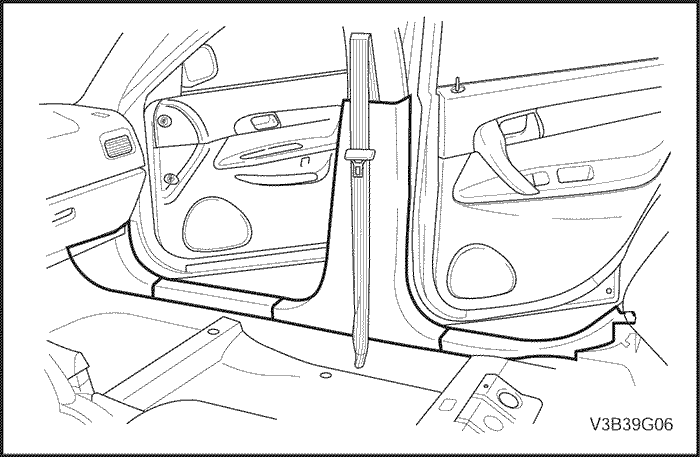
Panel de tapizador del pilar B inferior
Procedimiento de desmontaje
- Retire la parte trasera y la parte delantera del panel de guarnecido basculante delantero.
- Desmonte el panel de guarnecido del montante B inferior.
procedimiento de montaje
- Monte el panel de guarnecido del montante B inferior.
- Monte el panel de guarnecido basculante delantero y el panel de guarnecido basculante trasero en sus posiciones originales.

Panel de revestimiento del pilar C
Procedimiento de desmontaje
- Quite la tapa del tornillo y el tornillo del panel de guarnecido del montante C (si el vehículo dispone de airbag de cortina).
- Desmonte el panel de guarnecido del montante - C.
procedimiento de montaje
- Monte el panel de guarnecido del montante C.
- Coloque el tornillo del panel de guarnecido del montante C con la tapa del tornillo (si el vehículo dispone de airbag de cortina).
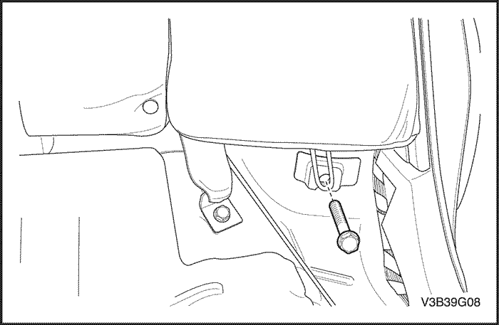
Cubierta de tapa de umbral de puerta
Procedimiento de desmontaje
- Desmonte el cojín de refuerzo lateral del asiento trasero. Consulte la Sección 9H, Asientos.
- Baje el respaldo del asiento trasero.
- Desmonte el panel de guarnecido del montante - C. Consulte el apartado "Panel de guarnecido del montante C" de esta sección.
- Desmonte los cinturones de seguridad traseros. Consulte la Sección 8A, Cinturones de seguridad.
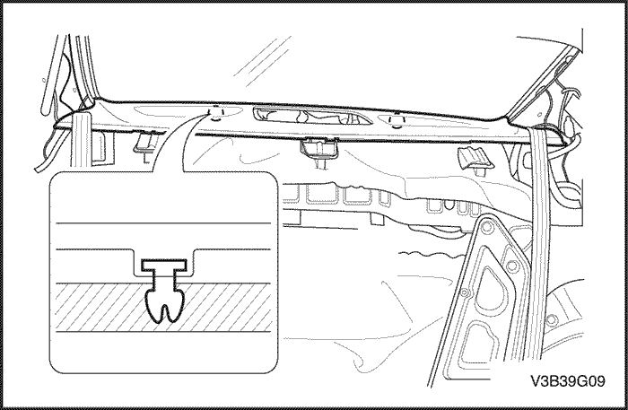
- Quite los clips de retención de plástico y desmonte la cubierta de la bandeja trasera con unos alicates de punta larga.
procedimiento de montaje
- Monte la cubierta de la bandeja trasera y coloque los clips de retención de plástico.
- Monte los cinturones de seguridad traseros, consulte la Sección 8A, Cinturones de seguridad.
- Monte el panel de guarnecido del montante C. Consulte el apartado "Panel de guarnecido del montante C" de esta sección.
- Monte el cojín de refuerzo lateral del asiento trasero. Consulte la Sección 9H, Asientos.
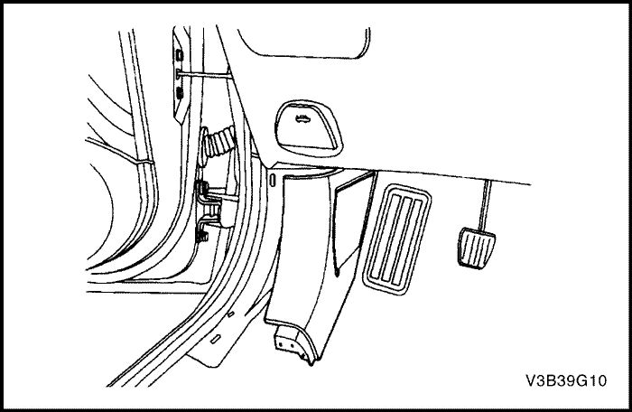
panel de defensa (en las puertas)
(Indicado para conducción a izquierdas, conducción a derechas similar)
Procedimiento de desmontaje
- Desmonte el panel de guarnecido basculante delantero.
- Desmonte los paneles de defensa.
procedimiento de montaje
- Monte el panel de defensa.
- Monte el panel de guarnecido basculante delantero.
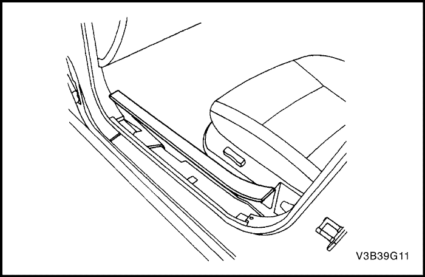
Panel de tapizado de basculador delantero
Procedimiento de desmontaje
- Desmonte el panel de guarnecido basculante delantero.
procedimiento de montaje
- Monte el panel de guarnecido basculante delantero.
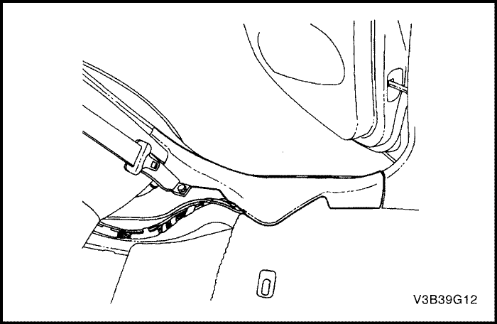
Panel de tapizado de basculador trasero
Procedimiento de desmontaje
- Aparte el cojín del asiento trasero.
- Desmonte el panel de guarnecido basculante trasero.
procedimiento de montaje
- Monte el panel de guarnecido basculante trasero.
- Monte el cojín del asiento trasero en su posición original.

Consola de suelo
Procedimiento de desmontaje
- Desconecte el cable negativo de la batería.
- Desmonte el conjunto del encendedor de cigarrillos, la moldura central, el equipo estéreo y la guantera y su alojamiento. Consulte la Sección 9E, Instrumentación/información para el conductor.
- Retire la tapa inferior del panel de instrumentos. Consulte el apartado "Barra de protección de rodillas del lado del conductor" de esta sección.
- Desmonte el conjunto de controles automáticos de temperatura. Consulte la Sección 7D, Sistema de calefacción, ventilación y aire acondicionado con control automático de temperatura.
- Quite los tornillos y desmonte la tapa de la consola.
- Desenchufe los conectores eléctricos.
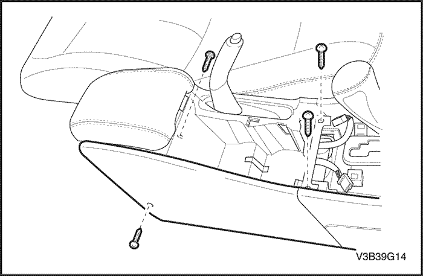
- Quite los tornillos y desmonte la parte trasera de la consola del piso.

- Quite los tornillos y desmonte la parte delantera de la consola del piso.
procedimiento de montaje
Aviso: Metales distintos en contacto directo pueden corroerse rápidamente. Asegúrese de utilizar los elementos de sujeción correctos para evitar una corrosión prematura.
- Monte la parte delantera de la consola del piso con sus tornillos.
Apretar
Apriete los tornillos de la consola delantera del piso hasta 4 N•m (35 lb-pie).
Aviso: Metales distintos en contacto directo pueden corroerse rápidamente. Asegúrese de utilizar los elementos de sujeción correctos para evitar una corrosión prematura.
- Monte la parte trasera de la consola del piso con sus tornillos.
Apretar
Apriete los tornillos de la consola trasera del piso hasta 3 N•m (27 lb-pie).
- Enchufe los conectores eléctricos.
Aviso: Metales distintos en contacto directo pueden corroerse rápidamente. Asegúrese de utilizar los elementos de sujeción correctos para evitar una corrosión prematura.
- Monte la tapa de la consola con sus tornillos.
Apretar
Apriete los tornillos de la consola trasera del piso hasta 2,5 N•m (22 lb-pie).
- Monte el conjunto de controles automáticos de temperatura. Consulte la Sección 7D, Sistema de calefacción, ventilación y aire acondicionado con control automático de temperatura.
- Monte la tapa inferior del panel de instrumentos. Consulte el apartado "Barra de protección de rodillas del lado del conductor" de esta sección.
- Monte el conjunto del encendedor de cigarrillos, la moldura central, el equipo estéreo y la guantera y su alojamiento. Consulte la Sección 9E, Instrumentación/información para el conductor.
- Conecte el cable negativo de la batería.
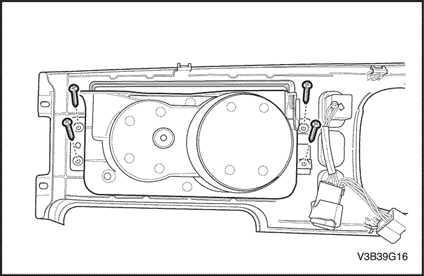
Posavasos
Procedimiento de desmontaje
- Quite los tornillos y desmonte la tapa de la consola. Consulte el apartado "Consola del piso" de esta sección.
- Quite los tornillos y desmonte el posavasos.
procedimiento de montaje
- Monte el posavasos con sus tornillos.
- Coloque los tornillos y monte la tapa de la consola. Consulte el apartado "Consola del piso" de esta sección.
Apretar
Apriete el tornillo del posavasos hasta 2,5 N•m (22 lb-pulg.).
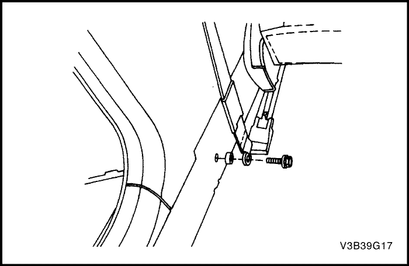
Alfombra de suelo
Procedimiento de desmontaje
- Desconecte el cable negativo de la batería.
- Desmonte el cojín del asiento trasero. Consulte la Sección 9H, Asientos.
- Desmonte los paneles de guarnecido traseros izquierdo y derecho. Consulte el apartado "Panel de guarnecido basculante trasero" de esta sección.
- Quite los tornillos y desmonte los anclajes inferiores izquierdo y derecho del cinturón de seguridad delantero del montante B. Consulte la Sección 8A, Cinturones de seguridad.
- Desmonte los paneles de guarnecido basculantes delanteros izquierdo y derecho.
- Desmonte los paneles de guarnecido izquierdo y derecho del montante B inferior. Consulte el apartado "Panel de guarnecido del montante B inferior" de esta sección.
- Desmonte los asientos delanteros. Consulte la Sección 9H, Asientos.
- Desmonte los paneles de defensa izquierdo y derecho. Consulte el apartado "Panel de defensa" de esta sección.
- Desmonte la consola del piso. Consulte el apartado "Consola del piso" de esta sección.
- Quite los tornillos del alojamiento del cambio de marchas y aparte dicho alojamiento. Consulte la Sección 5A, Caja de cambios automática AISIN 55-51LE
- Retire la alfombrilla.
procedimiento de montaje
- Ponga la alfombrilla.
- Monte el alojamiento del cambio con sus tornillos. Consulte la Sección 5A, Caja de cambios automática AISIN 55-51LE
- Monte la consola del piso. Consulte el apartado "Consola del piso" de esta sección.
- Monte los paneles de defensa izquierdo y derecho. Consulte el apartado "Panel de defensa" de esta sección.
- Monte los asientos delanteros. Consulte la Sección 9H, Asientos.
- Monte los paneles de guarnecido izquierdo y derecho del montante B inferior. Consulte el apartado "Panel de guarnecido del montante B inferior" de esta sección.
- Monte los paneles de guarnecido basculantes delanteros izquierdo y derecho.
- Monte los anclajes de la parte inferior derecha e izquierda del cinturón de seguridad delantero en el montante B con sus tornillos. Consulte la Sección 8A, Cinturones de seguridad.
- Monte los paneles de guarnecido basculantes traseros izquierdo y derecho. Consulte el apartado "Panel de guarnecido basculante trasero" de esta sección.
- Monte el cojín del asiento trasero. Consulte la Sección 9H, Asientos.
- Conecte el cable negativo de la batería.

Guarnecido de la puerta del maletero
Procedimiento de desmontaje
- Quite los tornillos que sujetan el tirador de la puerta del maletero.
- Quite los clips y el guarnecido de la puerta del maletero.
procedimiento de montaje
- Monte el guarnecido de la puerta del maletero con los clips.
- Monte el guarnecido de la puerta del maletero con los clips.
- Coloque los tornillos que sujetan el tirador de la puerta del maletero.
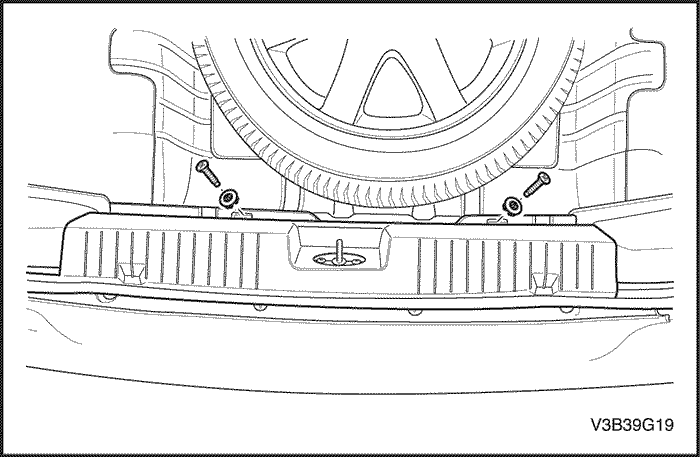
Cubierta inferior trasera del compartimento de equipajes
Procedimiento de desmontaje
- Quite los tornillos y desmonte la cubierta del panel trasero.
procedimiento de montaje
- Monte la cubierta del panel trasero con sus tornillos.
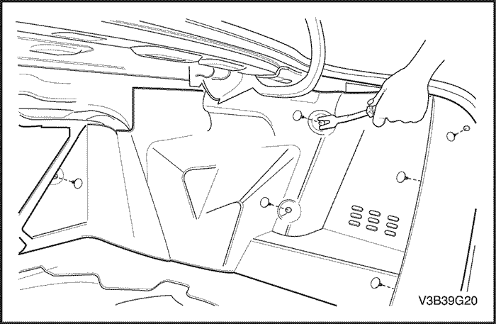
Panel de tapizado del alojamiento de rueda del compartimento de equipajes
Herramientas necesarias
Extractor de elementos de acabado KM-475-B
Procedimiento de desmontaje
- Desmonte la cubierta del panel trasero del maletero. Consulte el apartado "Cubierta del panel trasero del maletero" de esta sección.
- Quite los clips de retención de plástico con la ayuda del extractor de elementos de acabado KM-475-B y aparte el panel de guarnecido trasero del maletero.
procedimiento de montaje
- Monte el panel de guarnecido del paso de rueda con los clips de plástico.
- Monte la cubierta del panel trasero del maletero. Consulte el apartado "Cubierta del panel trasero del maletero" de esta sección.

Barra de protección de rodillas del lado del conductor
(Indicado para conducción a izquierdas, conducción a derechas similar)
Procedimiento de desmontaje
- Retire el espacio portamonedas y quite los tornillos.
- Separe del tirador el cable de apertura del capó.
- Tire con cuidado de la cubierta inferior del panel de instrumentos hasta que se suelten los clips de fijación y dicha cubierta.
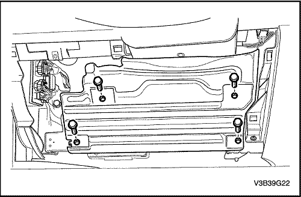
- Quite los tornillos del apoyo de la rodilla del lado del conductor.
- Desmonte el apoyo de la rodilla.
procedimiento de montaje
Aviso: Metales distintos en contacto directo pueden corroerse rápidamente. Asegúrese de utilizar los elementos de sujeción correctos para evitar una corrosión prematura.
- Monte la barra de protección de rodillas con sus tornillos.
- Monte la barra de protección de rodillas con sus tornillos.
Apretar
Apriete los tornillos de fijación de la barra de protección de rodillas del lado del conductor hasta 14 N•m (124 lb-pulg.).
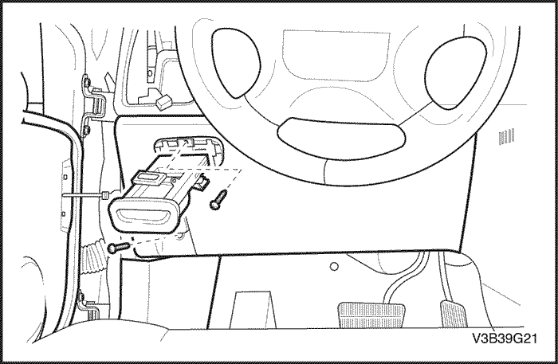
- Monte la tapa inferior del panel de instrumentos.
- Conecte el cable de apertura del capó al tirador.
- Coloque el espacio portamonedas y los tornillos.
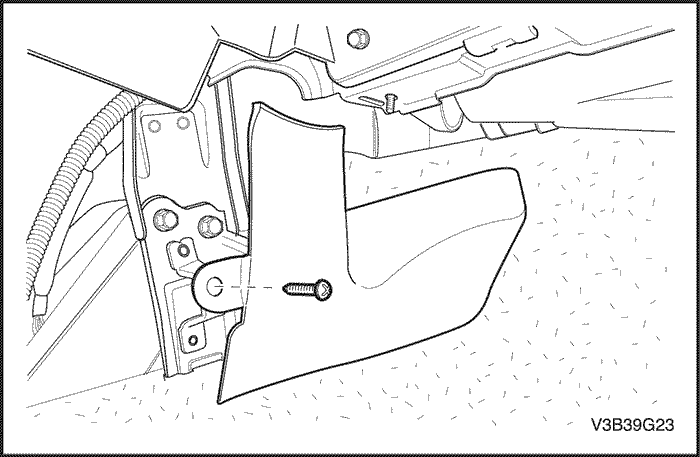
Extensión de la consola delantera
Procedimiento de desmontaje
- Desmonte la consola del piso. Consulte el apartado "Consola del piso" de esta sección.
- Quite el tornillo y desmonte la extensión de la consola delantera.
procedimiento de montaje
- Monte la extensión de la consola delantera con su tornillo.
- Monte la consola del piso. Consulte el apartado "Consola del piso" de esta sección.
DESCRIPCIÓN GENERAL Y FUNCIONAMIENTO DEL SISTEMA
Paneles de tapizado interior
Los paneles de guarnecido (acabado) interior son de plástico moldeado y van fijados con tornillos o clips de plástico.
Respiradero de alivio de presión
Cuando se cierran las ventanillas y el sistema de ventilación se pone en marcha, la entrada de aire exterior al habitáculo genera una presión positiva dentro del vehículo. Para aliviar la presión, el aire se libera a través de una tobera de alivio. Las toberas de alivio de presión están situadas en la parte trasera del vehículo, detrás del tablero del parachoques.
Consola de suelo
La consola del piso encaja sobre el túnel situado en el piso del vehículo y se extiende desde debajo de la parte central del panel de instrumentos hasta la zona de los asientos traseros. La parte delantera de la consola contiene el encendedor y la palanca de la caja de cambios. La parte trasera de la consola encierra la palanca del freno de estacionamiento, un posavasos, un compartimento para guardar objetos y un cenicero para los ocupantes del asiento trasero.
El módulo de detección y diagnóstico (SDM) del sistema del airbag está situado debajo de la consola.
Alfombra de suelo
La alfombrilla del piso es de una sola pieza y se extiende sobre los paneles delantero y trasero del piso.